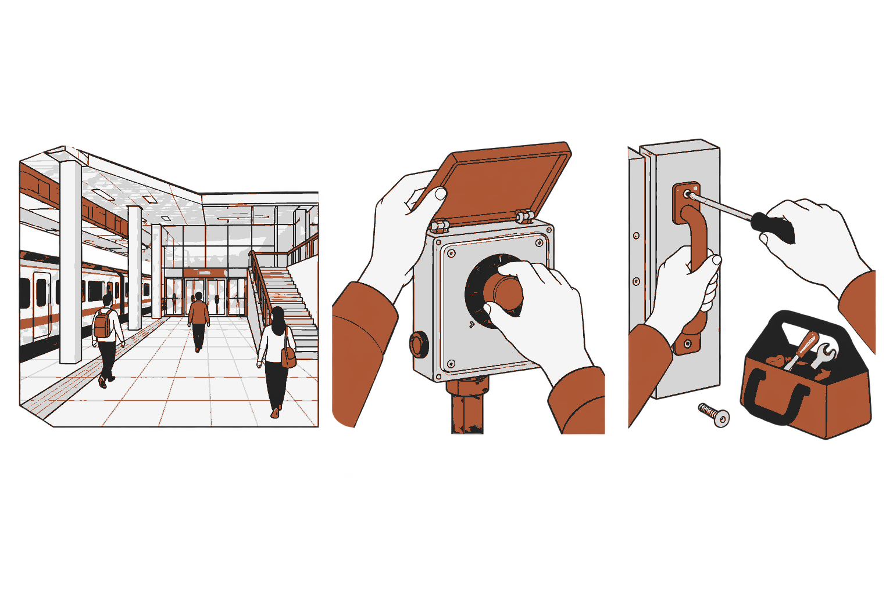

CHOOGuard · 가상현실 Term Project
CHOOGuard
한국철도공사(코레일) 부산역·주변지역
디지털 트윈 기반
FPS 비상상황 대응 시뮬레이터
FPS 비상상황 대응 시뮬레이터
개발 제안서
현장 사진·영상·도면 → 공간 구축 → 랜덤 상황 대응
CHOOGuard | 디지털 트윈 · FPS 랜덤 시드 시뮬레이터
01
CHOOGuard · 가상현실 Term Project
제작 취지
현실 훈련의 자원·재현 제약에서 출발한다.
구축 대상: 한국철도공사(코레일)의 부산역과 주변 지역
현재 대본 기반 현실 훈련
인력·장비·운영 자원 동원
위험 재현·상황 범위의 제약
위험 재현·상황 범위의 제약
목표 완전 랜덤 오픈월드
모든 오브젝트·NPC의 상태와 상호작용
예정되지 않은 상황에 반복 대응
예정되지 않은 상황에 반복 대응
디지털 트윈 구축 → 랜덤 상황 플레이 → 대응 흐름의 경험 축적
실제 상황에서 더 빠르고 정확한 대응을 기대한다.
실제 상황에서 더 빠르고 정확한 대응을 기대한다.
CHOOGuard | 디지털 트윈 · FPS 랜덤 시드 시뮬레이터
02
CHOOGuard · 가상현실 Term Project
개발 요구사항 및 개발 환경
부산역·주변지역 디지털 트윈
한국철도공사(코레일)의 부산역과 주변 지역
사진·영상·도면을 맞추고 Unity에 배치
사진·영상·도면을 맞추고 Unity에 배치
FPS 랜덤 시드 시뮬레이터
모든 오브젝트·NPC의 상태와 행동 연결
상황·NPC 행동 생성, 도구·설비 부품 직접 조작
상황·NPC 행동 생성, 도구·설비 부품 직접 조작
현실 대응 조작 99% 재현 목표
제작 환경
Python·COLMAP
NeRF·3DGS·Hunyuan3D
Blender·실행용 GPU
NeRF·3DGS·Hunyuan3D
Blender·실행용 GPU
실행 환경
Unity 6000.3.23f1·URP
Input System·FPS 조작
VR 개발 예정: OpenXR·손 입력
Input System·FPS 조작
VR 개발 예정: OpenXR·손 입력
CHOOGuard | 디지털 트윈 · FPS 랜덤 시드 시뮬레이터
03
CHOOGuard · 가상현실 Term Project
기술적 특징
디지털 트윈 구축을 위한 컴퓨터비전
시점 보강
3DGS·생성 보강 연구
부족한 방향의 입력 후보
부족한 방향의 입력 후보
장면·표면 복원
NeRF·NeuS·2DGS
사진으로 시점 표현·표면 복원
사진으로 시점 표현·표면 복원
객체 생성
Hunyuan3D 2.1 / Omni
형상·재질 후보와 보정
형상·재질 후보와 보정
사진·영상·도면 → COLMAP 정합 → 복원/생성 → Blender → Unity
FPS 랜덤 오픈월드를 위한 연구·OSS·기술
상황·행동 생성
SimWorld·Virtual Community
객체·NPC 상태에서 행동 조합
객체·NPC 상태에서 행동 조합
판단·계획 재사용
JEV·AgenticCache
상황 변화·실패 시 재판단
상황 변화·실패 시 재판단
이동·부품 조작·기록
NavMesh·관절·충돌·잡기
시드·입력·모델 응답 기록
시드·입력·모델 응답 기록
CHOOGuard | 디지털 트윈 · FPS 랜덤 시드 시뮬레이터
04
CHOOGuard · 가상현실 Term Project
주단위 구현계획
1
1주차
자료·기준
수집·출처
장치·평가
장치·평가
입력 목록
2
2주차
정합·보강
카메라·축척
시점 비교
시점 비교
정합·비교표
3
3주차
자산 제작
복원·생성
Blender
Blender
비교 자산
4
4주차
공간 연결
배치·부품
상태·통행
상태·통행
공간·객체표
5
5주차
플레이 통합
판단·시드
FPS·VR
FPS·VR
통합 빌드
6
6주차
검증·시연
평가·수정
빌드·영상
빌드·영상
최종 제출물
CHOOGuard | 디지털 트윈 · FPS 랜덤 시드 시뮬레이터
05
CHOOGuard · 가상현실 Term Project
결과물 형상

부산역·주변지역
잡기·회전·누르기
도구 사용·결합·분리
계획한 완성 모습 · 생성 개념도
CHOOGuard | 디지털 트윈 · FPS 랜덤 시드 시뮬레이터
06
CHOOGuard · 가상현실 Term Project
기대효과
기대하는 변화
확인할 근거
훈련에 드는 인력·장비 부담 감소
공간 제작·갱신·재사용 비용
현실 훈련 자원과 모델 호출 비용
현실 훈련 자원과 모델 호출 비용
예상 밖 상황의 반복 경험
상황·NPC 행동의 다양성과 타당성
게임 시작·이동·조작의 어려움
게임 시작·이동·조작의 어려움
대응 흐름의 경험 축적
사전·사후·유지·새 상황 전이
실제 행동 시간·절차 오류
실제 행동 시간·절차 오류
실제 대응의 속도·정확도 향상은 검증할 기대효과다.
CHOOGuard | 디지털 트윈 · FPS 랜덤 시드 시뮬레이터
07